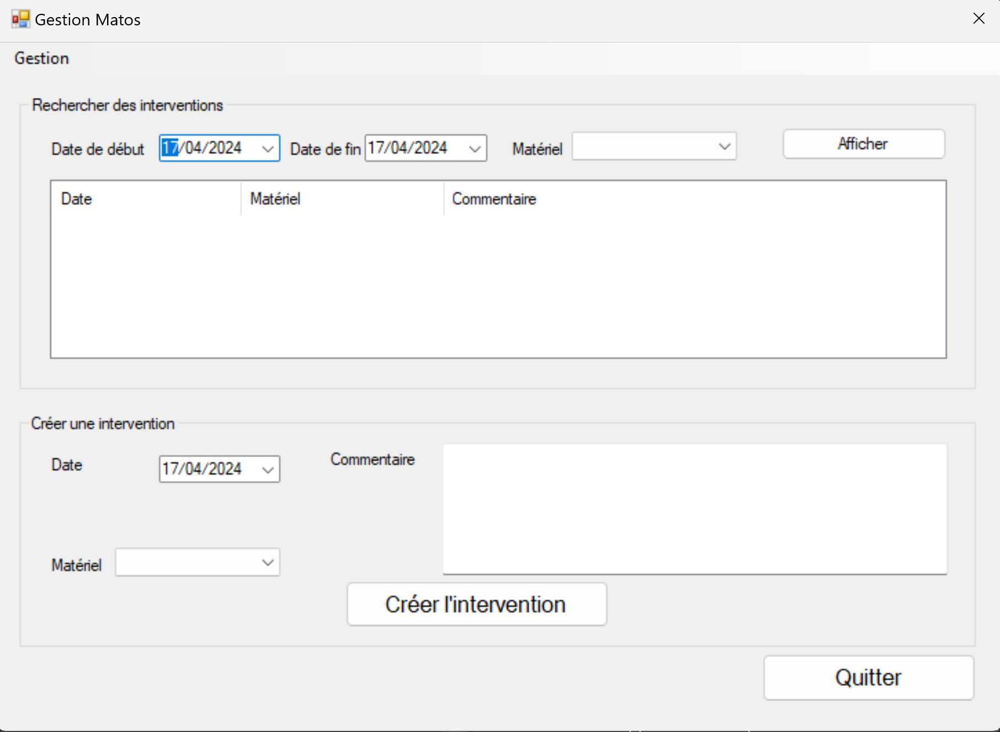

Lien du projet :
Durant l'année, nous avons réalisé un projet appelé "GestionMatos", qui est mon projet client lourd, c'est une application Windows graphique qui permet de faire l'inventaire d'un parc informatique et gérer les interventions sur celui-ci.
Notre équipe a travaillé en étroite collaboration pour concevoir une interface conviviale et attrayante, en utilisant C# et le framework .NET.
Voici le contexte de notre projet: "La société JIMBHA située à Paris, leader de l’infogérance en France depuis 1995, décide de développer une application client lourd dans le but de faciliter son travail de gestionnaire de parc informatique. Cette application permettra un gain de temps et une organisation bien précise qui aménagera au mieux les ressources de la société."
Ce logiciel, qui a un accès sécurisé par un mot de passe, doit permettre :
Ce projet dispose d'une documentation pour y accéder cliquez ici !
Le projet GestionMatos que nous avons développé utilise une base de données SQL Server pour stocker et gérer les informations essentielles. Notre base de données est conçue avec cinq tables : "Utilisateur", "TECHNICIEN", "INTERVENTION", "MATERIEL" et "CLIENT". Voici le Modéle physique de données (MPD), de la base de données de GestionMatos:
La table " Utilisateur" est utilisée pour enregistrer les utilisateurs avec leur nom et mot de passe.
La table "TECHNICIEN" contient les différents techniciens de la société. Chaque technicien est enregistré avec un identifiant unique.
La table "INTERVENTION" est utilisée pour enregistrer les interventions créées et prend comme clé étrangère "ID_MAT" pour les matériels sur lesquels l'intervention à lieu et "ID_TECH" pour savoir quel technicien va intervenir.
La table "CLIENT" est utilisée pour enregistrer dans cette table les clients de la société, ils sont renseignés et stocker dans la base de donnée à partir de la page client de l'application.
La table "MATERIEL" est utilisée pour enregistrer dans cette table les matériaux des clients, chaque matériaux possède une clé étrangère "ID_CLIENT" qui permet de renseigner le client qui détient le matériel.
Liens utiles du projet :